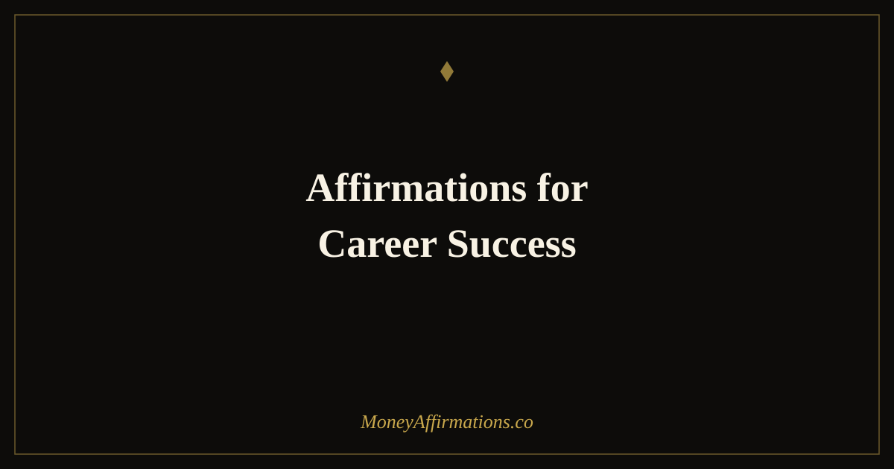

Affirmations for Career Success: 30 Statements to Advance Fast

Career success is built on two things working together: the skills you bring and the belief you have in those skills. Most career advice addresses the first — develop more skills, gain more experience, build your network. Far less attention goes to the second: the internal narrative that determines whether you ask for the promotion, send the application, speak up in the room, or negotiate the salary. That narrative shapes financial outcomes as directly as any external qualification.
These 30 affirmations for career success are built around the specific beliefs that accelerate professional growth: confidence in your value, clarity about your direction, willingness to be visible, and the conviction that advancement is genuinely available to you. Used alongside real effort and deliberate skill-building, they remove the internal friction that so often turns capable people into overlooked ones.
What are career success affirmations?
Career success affirmations are present-tense statements that align your professional self-concept with the outcomes you are working toward. They differ from general confidence affirmations in that they address the specific psychological patterns that suppress career advancement: imposter syndrome, fear of asking for more, reluctance to take visible risks, and the habitual undervaluing of your own contributions.
For financial growth specifically, career affirmations are among the highest-leverage tools available. A single salary negotiation, a promotion secured, or a move to a role that fits your true level can be worth tens of thousands in lifetime earnings. The beliefs that block those moments — "I am not ready," "they will say no," "I do not want to seem arrogant" — are addressable. Career success affirmations work on exactly those beliefs. For a broader professional context, the affirmations for career growth collection provides additional depth.
30 affirmations for career success
- I am skilled, capable, and deserving of professional success at the highest level.
- My work creates genuine value and I am compensated generously for it.
- I advance in my career because I show up with excellence and ask for what I am worth.
- I am seen, respected, and recognised for the quality of my contribution.
- Every opportunity I pursue brings me closer to the career I am meant to have.
- I bring something unique and valuable to every role I hold.
- My career trajectory is upward and I have the skills to sustain it.
- I am comfortable being visible, vocal, and confident in professional settings.
- I ask for raises, promotions, and opportunities because my work merits them.
- Success in my career is not luck — it is the result of my consistent effort and clear intention.
- I am ready for the next level of my career and I pursue it with confidence.
- My professional reputation grows stronger with every project I complete.
- I learn quickly, adapt well, and bring measurable results to everything I take on.
- I negotiate my salary and terms with calm confidence and full knowledge of my worth.
- The right roles, the right managers, and the right opportunities find me because I am ready.
- I take up the space I have earned in every professional room I enter.
- My income grows as my skills, visibility, and professional confidence grow.
- I belong in rooms with high-performing, well-paid professionals — I am one of them.
- I invest in my professional development because I take my career seriously.
- I release imposter syndrome and stand fully in the competence I have earned.
- My career success serves my financial life, my freedom, and the people I love.
- I am strategic, purposeful, and clear about where my career is heading.
- Every skill I build and every relationship I develop opens a new financial door.
- I am not waiting to be discovered — I make myself known through excellent work.
- My career is one of my greatest financial assets and I treat it accordingly.
- I accept praise, opportunity, and advancement without minimising or deflecting.
- My best professional years are ahead of me and I approach them with genuine excitement.
- I set clear career goals and I take deliberate action to reach them every single week.
- I am the kind of professional who earns well, grows consistently, and leads with integrity.
- Career success is available to me, and I claim it with the full force of my ability.
How to use these affirmations
Career affirmations are most potent when used immediately before professional moments that activate self-doubt. The five minutes before a performance review, salary negotiation, job interview, or important presentation are the highest-leverage window. Choose two or three affirmations, say them aloud, and walk into the room as that person. This is not pretending — it is activating the part of you that is already capable, before fear has a chance to narrow your presentation of yourself.
For daily practice, use three affirmations each morning and pair them with a written professional intention for the day: one specific action that advances your career. That action might be reaching out to a senior contact, completing a high-visibility deliverable, applying for an opening, or simply speaking up in a meeting you would normally sit through silently. The affirmation sets identity; the intention creates direction; the action produces evidence. All three, together, compound into the kind of career momentum that significantly changes lifetime earning.
How self-efficacy shapes career earnings — the evidence
Career self-efficacy — the belief in your ability to perform effectively in professional contexts and advance through deliberate effort — is one of the most consistently predictive factors in career outcomes. Meta-analyses across dozens of studies have found that career self-efficacy predicts job performance, willingness to pursue advancement, resilience after setbacks, and actual income growth. It predicts these outcomes more reliably than external factors like the prestige of your degree or the size of your company.
The mechanism is not mysterious: people who believe they can advance behave differently. They volunteer for high-visibility projects. They speak up in meetings. They apply for roles slightly above their current level. They negotiate salary rather than accepting the first offer. They build networks deliberately rather than hoping to be discovered. Each of these behaviours is a direct financial lever — and each is suppressed by low career self-efficacy. Career success affirmations directly target and build that self-efficacy, creating the internal conditions under which career-advancing behaviours become natural rather than effortful. Over time, those behaviours compound into earnings trajectories that look, from the outside, like exceptional luck.
Tips to make them work faster
- Use them before every significant professional interaction. Performance reviews, negotiations, presentations — three affirmations, said aloud, before each one. This is where the practice pays for itself.
- Target the belief that blocks you most specifically. If asking for a raise is the block, use those statements daily. Generalised confidence practice is useful; targeted belief work is transformative.
- Track career wins weekly. Write one professional thing you did well this week. Career confidence is built on evidence — document the evidence deliberately.
- Pair with a mentor or sponsor relationship. Affirmations build internal belief; external mirrors accelerate it. Find someone who already sees your potential at full size.
- Ask for the next thing before you feel entirely ready. Readiness in careers is rarely a prerequisite for advancement — it is usually the result of it. The affirmation helps you act before the feeling is complete.
Frequently Asked Questions
How do career success affirmations connect to financial growth?
Career progression is one of the most direct paths to income growth for most people. The beliefs that limit career advancement — imposter syndrome, fear of visibility, reluctance to ask for more — are the same beliefs that suppress earning. Career success affirmations address these beliefs directly, creating the internal conditions for asking for raises, pursuing promotions, taking visible roles, and being paid what your work is worth.
When is the best time to use career affirmations?
The highest-impact moments are immediately before career-defining interactions: performance reviews, salary negotiations, job interviews, important presentations, or conversations with senior colleagues. Using three to five affirmations in the five minutes before these events changes the psychological state you bring to them. A daily morning practice builds the baseline confidence that makes the high-stakes moments feel less exceptional.
What if I feel like my career is genuinely stuck, not just a mindset issue?
Both can be true simultaneously. External barriers in careers are real — limited opportunities, difficult environments, structural inequalities. Affirmations do not remove those. What they do is ensure that internal barriers — self-doubt, fear of rejection, undervaluing your contributions — are not adding to the external ones. Removing the internal layer often reveals more room to move than you thought was there, and creates the confidence needed to seek opportunities beyond the current environment.
For a broader set of money statements that support your earning potential across every area of your financial life, explore the full money affirmations collection and build the mindset that your career and your finances both deserve.